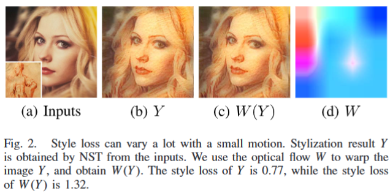
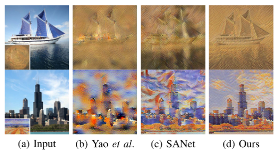
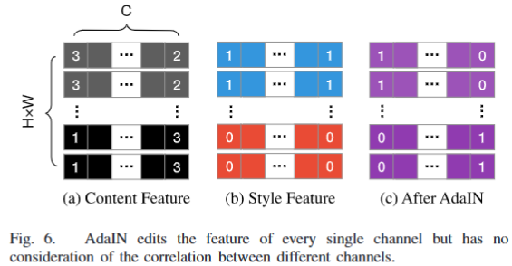
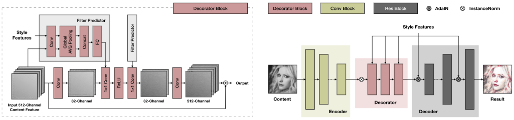

Consistent Video Style Transfer via Relaxation and Regularization
Consistent Video Style Transfer via Relaxation and Regularization
2020 TIP
Abstract
temporally consistent style transfer是有挑战性的东西，现有的方法无论是依赖于大量具有光流的视频数据，还是使用单帧regularizers，都无法处理强烈的运动或复杂的变化，因此在真实视频上的性能有限。
在本文中，我们通过共同考虑stylization和temporal consistency的内在属性来解决这个问题。我们首先找出风格迁移与时间一致性冲突的原因，并提出通过relax（放松）目标函数来调和这一矛盾，从而使风格化损失项对运动更具鲁棒性。通过relaxation，风格迁移对帧间变化更robust。然后，我们提供了一个新的formulation和时间一致性的理解。在此基础上，我们分析了现有训练策略的不足，并推导出一种新的正则化方法。
实验表明，所提出的正则化方法可以更好地平衡空间和时间性能。基于松弛和正则化，我们设计了一个zero-shot视频风格传输框架。此外，为了更好地迁移特征，我们引入了一个新的module来动态调整通道间分布。定量和定性结果表明，我们的方法优于最先进的风格转移方法。https://daooshee.github.io/ReReVST/
Introduction
视频风格迁移的难点在于视频风格化和时间一致性的矛盾，我们用调整风格损失来缓解这一矛盾。
通过relaxing style loss的shape-sensitivity，可以直接提高时间一致性。其次，通过理论分析，我们发现无论是传统的视频训练方式，还是最近提出的一些单帧正则化，都与时间一致性的本质存在矛盾，会导致欠拟合，从而降低网络性能。
基于数学建模的方法，我们提出了新的compound regularization能够更符合时序变化的规律。大量的实验证明了所提出的正则化在平衡时间稳定性和stylization效果方面的有效性。改进视频风格转换的另一个方面是引入inter-frame relationship（帧间关系），这有利于长期的时间一致性。然而，许多模型通过估计光流来实现这一点，这样做既低效又不robust。相反，我们建议share global features。整个序列的特征分布一致，网络对运动和光照变化的就更robust，且不影响stylization效果。
最后，在特征迁移（style migration）方面，我们设计了一个动态滤波器（dynamic filter）来调整通道内inner和通道间inter-channel的特征分布，从而更好地重建style pattern。
贡献：
- 我们提出了一种新颖的视频风格转换框架，既具有优越的时间一致性，又具有视觉上令人愉悦的stylization效果。开发了一种强大的端到端可训练滤波器，用于动态调整通道间特征分布，改善了颜色和纹理重建。实验结果证明了该框架的优越性。
- 我们分析了程式化与时间一致性之间的冲突。为了缓解冲突，我们尝试通过精心设计的动作来放style loss，这可以有效地提高时间一致性，而不降低风格转移效果。
- 我们提供了时间一致性的理论分析和通用建模，从中我们得到了一种新的正则化，它在平衡空间和时间性能方面具有卓越的有效性，并可以帮助其他计算机视觉视频任务。
TEMPORAL PROPERTIES OF STYLE TRANSFER
Modeling of Temporal Consistency：
视频具有帧间相关性与temporally smooth，为了分析视频迁移中的flicker，先给出帧间相关性的公式：
忽略物体出现和消失并假设颜色不变，这样就只需要考虑motions。令表示视频的第n帧，temporal consistency可以定义为：存在很小的数，使得对于所有的满足，的值满足：
其中K表示long-term temporal consistency的长度，表示到的相应光流的warping结果，其中就表示时序一致性的degree。对于稳定的视频，这个数会非常小，小到人眼看不出出来flickering artifacts。
在图像处理模型F中保持temporal consistency的目标可以描述为：当输入视频consistent时，我们希望输出视频也是consistent的。显然，和并不局限于相邻帧。因此，可以将我们的目标写成：存在很小的数，使得对于任意的以及一个warping操作， 满足：
Temporal Consistency of Style Loss：
大致就是风格和tc矛盾的原因是：风格要求对图像shapes和edges敏感，而tc要求模型对这俩robust，因此二者会发生矛盾。做个小实验验证特定的motion能够大大增加style loss：取6张content image，20个artistic images。应用7种风格迁移方法得到840种风格迁移结果Y。然后，用SGD找到使最大的光流W。我们让W巨小，小到人眼看不出变化，在下图中可以看出，虽然和在人眼看来几乎一样，但的style loss几乎是Y的两倍。

总能找到一些W使得style loss垃圾，因此这二者可能无法同时最小化，因此，以最小化style loss为目标的模型就无法避免flickering artifacts。反之亦然。
Relaxed Style Loss：
style loss对shapes的变化很敏感，但在人类眼中可能没那么重要。所以我们选择放弃loss中shapes的部分。brbrbr这波放松没啥参考价值
Compound Temporal Regularization：
现有视频相关模型在大量带光流视频上训的，一方面高质量视频难以获取，另一方面光流不准，本文中，我们在temporal consistency的基础上设计了一种新的temporal regularization，不需要视频或估计光流：令，则之前tc的式子化为：
这就意味着保持时间一致性就等价于最小化：
直观来看，为两个transformation的compound：表示local jitter或noise，而表示motions。上式的含义是在复合变换下迫使模型产生consistent result。
经典方法一般先获得相邻帧然后估计光流，这估计的可能不准确。正则化方法中，我们先生成了光流，然后合成相邻帧，因此是绝对准确的。后面有实验说明。
Sequence-Level Global Feature Sharing：
单帧信息用于处理稳定视频是不够的，引入帧间相关性的一个经典方法是用光流warping帧，但这高度依赖于光流的准确性，无法处理长期一致性。
很多方法用完整的图像全局分布来描述风格，如AdaIN中的feature-level的均值和方差。however，当有extreme variation发生时，比如新物体进入或光照变化时，全局分布将会改变，这可能会导致相同的物体在不同帧中style不同。
基于此，我们建议在整个序列中share global feature。具体来说，先提取八分之一帧，然后计算global feature的sequence-level平均值，最后，在inference阶段，只使用平均值。实验证明，goodgood。
CONSISTENT VIDEO STYLE TRANSFER
综上，我们提出了新的视频风格迁移框架。本节中，先介绍用于调整feature distribution的stylization module，然后给出完整的模型架构。
Dynamic Inter-Channel Filter：
风格迁移的本质是分布的迁移，目前，大多数feed-forward风格迁移模型都是基于feature adjusting modules的。AdaIN提出对齐feature-level通道均值和方差，并设计了adain层。Avatar-Net提出了Style Decorator，结合了distribution migration和patch matching。Yao等人用自注意力机制改进了Avatar-Net，同样基于自注意力，SANet通过修改注意力来进行特征的迁移。

如上图所示，AvatarNet和Yao不能很好匹配style pattern和semantic structure，这会导致messy textures和distorted contours。此外，Ava不支持端到端。SANet可能会distort textures并引入奇怪的strokes。为了解决这些，我们提出一种新的style transfer module。
我们的设计基于AdaIN，在AdaIN中，虽然每个通道的分布都有很好的迁移，但不同通道之间的相关性仍然可能与target style的不一致，如图6所示。这可能会导致不令人满意的结果。基于此，我们提出共同调整inner-和inter-channel features。

如下图所示，input和style feature都被feed到Filter Predictor module中，来动态预测不同通道的linear combination，然后经过1*1卷积用于输入特征，global average pooling模块保证了网络对任何分辨率的鲁棒性。若直接预测512通道，直接寄，因此降为32维，并用residual learning来防止信息的丢失，

Network Architecture：
模型基于encoder-decoder，我们的模型中有俩编码器，一个用于context，一个用于style，在二者之间还有一个feature migration module。提出的网络如上图所示，先用类vgg编码器提取输入context和style图像的high-level feature。然后context features由三个连续的decorator blocks处理以match style。受Avatar-Net启发，在编码器和解码器之间增加了多级AdaIN skip connection。
在模型中有两种全局特征：
- Instance normalization（AdaIN）中的feature-level均值与方差。
- Filter Predictor中的filter
根据提出的全局特征共享策略，他们的值在inference时在整个sequence中共享。
Loss Functions：
训练损失由五部分构成，其中为提出的compund temporal loss，表示relexed style loss。style loss和content loss用pre-trained VGG19（LPIPS？）：
其中表示VGG-19第l层的feature map，S表示style image，C表示content image。表示total variation loss。风格和内容颜色差异会影响结果，在训练和inference的时候对content图像进行去饱和处理：
其中表示灰度content image，有利于保留style的颜色，此外我们还引入一种颜色重构loss：
其中F表示模型，有助于提高时间一致性，避免颜色变化。
Quantitative and Qualitative Comparisons
定量比较的指标：
temporal consistency：用了广泛的时间损失，同时评估短期和长期时间一致性：
其中表示帧的间隔，O表示occlusion mask，小o表示element-wise multiplication（逐元素乘法）。用PWC-Net估计光流，由于光流可能不准，